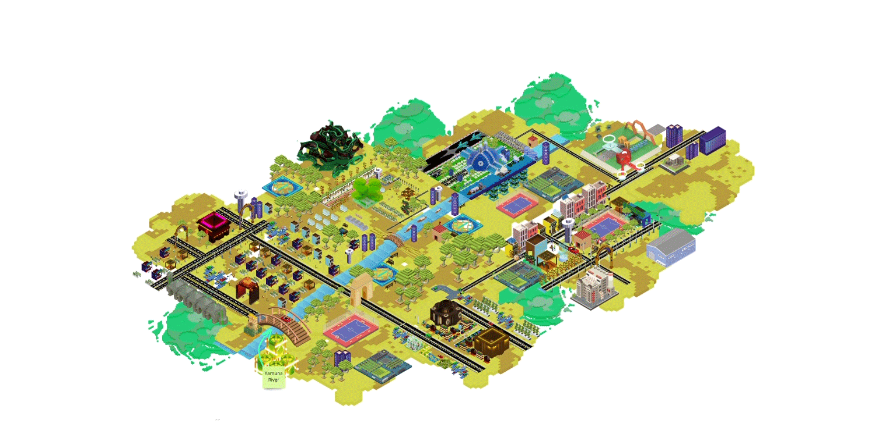

Client: Educational and Public institutions | Role: Workshop design and Facilitation
Future of Ahmedabad | ANU
Over the course of 5 days the industrial design students of Anant National University were challenged to explore what sustainability meant to them and how a strengthened commitment to sustainable practices by those shaping the city of Ahmedabad might inform its development.
The aim of the workshop was to encourage students to unpack the large and complex concepts of sustainability and foresight, and make these approaches relevant to their own needs and interrogations.
This was done through a wide range of activities from simple desk research, to world-building, to 3D modelling. Each activity and tool contributed to making these concepts more approachable and personal.
The deck used to introduce the students to the practice of Speculative Design.

Cyberlocal001 | FutureBased
Cyberlocal Dreams is an all-publics-welcome collaborative workshop in which participants can imagine alternative urban landscapes. The core aim of the session is to get participants to see cities as story-enabling platforms, this means cities should of course be safe and healthy places to live but also allow for the enchantment of life.
These 3hrs workshops start with a discussion on what makes a city "livable". The participants then use a story generator I designed to come up with a conflicting situation in which the city comes to the participant's aid. The situation provided by the generator is then translated into an isometric collage bringing to life a very unique interpretation of the urban environment.
The first ticketed Cyberlocal event was made possible by Sabine Winter's Future Based platform to whom I'll be eternally grateful for the opportunity and trust.
The Cyberlocal collages were all created in response to a prompt from the Cryptic Cities generator.
Cyberlocal002 | Madlab
Cyberlocal Dreams is an all-publics-welcome collaborative workshop in which participants can imagine alternative urban landscapes. The core aim of the session is to get participants to see cities as story-enabling platforms, this means cities should of course be safe and healthy places to live but also allow for the enchantment of life.
These 3hrs workshops start with a discussion on what makes a city "livable". The participants then use a story generator I designed to come up with a conflicting situation in which the city comes to the participant's aid. The situation provided by the generator is then translated into an isometric collage bringing to life a very unique interpretation of the urban environment.